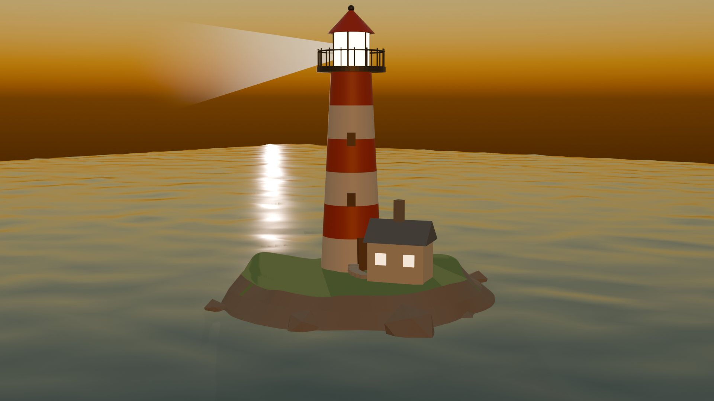

社内勉強会 ・ 10分
AIに「作って」と
頼んだら、ここまで
できる。
Claude Code × Blender MCP で知る
AI駆動開発と仕様駆動開発のはじめかた
AI経験ゼロでOK3Dモデリング指示の書き方仕様駆動開発
はじめに
この灯台、
AIが一から
作りました。
Claude Code が Blender を操作して、6つの段階で組み立てた。
人は Blender を一度も操作していない。
AIが形を作り、画像で確かめて直した。
今日の話
今日お話しすること
1
AIは「手を動かす」
質問に答えるだけでなく、道具を操作して物を作れる
2
指示で結果が変わる
書いていない所はAIが決める。伝え方しだいで仕上がりが変わる
3
「仕様」が主役になる
これからは、何を作るかを書いて残す力が大事になる
しくみ
AIが3Dモデルを作るしくみ
→
Claude CodeAIの作業係。
考えて、手順を組み立てる
→
Blender無料の3Dソフト。
実際に形を作る場所
↺ AIは出来上がりの画像を自分で見て、おかしければ自分で直す
AI駆動開発
変わるのは役割分担
| これまで | AI駆動開発 |
|---|
| 手を動かす | 人（操作・プログラムを覚える） | AI（操作もプログラムも書く） |
| 何を作るか決める | 人 | 人（ここが一番大事になる） |
| 出来を確かめる | 人 | 人 ＋ AI（最後は人） |
| 速さ | 覚えるまで時間がかかる | 試作が数分。何度でも作り直せる |
人の仕事は「作業」から 「決める・伝える・確かめる」 へ。
実験
同じAI・同じ道具。
変えたのは指示だけ。
毎回、前の会話を知らない新しい Claude Code に指示だけを渡し、出てきた結果をそのまま載せています。
指示 B「白い陶器のマグカップを作って。取っ手をつけて」
C ＋ 追加の修正できた物を見て
気づいた点を伝える
指示 A を 4 回
同じ「コップを作って」を、4回頼んだ
今回は4回とも白い陶器。でも別の日の実験では4回中3回がガラスのコップだった。
書いていない所は、AIがその都度推測で決めている。
結果を並べる
書いた分だけ、狙いに近づく
最初から完璧でなくていい。見て、追加で伝えれば近づけられる。
トークン（AIの使用量）
詳しく書いても、指示そのものは安い
| トークン数 | 操作の回数 | 時間 |
|---|
| 指示 A（4回の平均） | 約 5.2 万 | 4〜9 回 | 30〜45 秒 |
| 指示 B | 約 5.3 万 | 5 回 | 44 秒 |
| 指示 C | 約 6.4 万 | 15 回 | 2分28秒 |
| C ＋ 追加の修正 | +0.7 万（累計 7.1 万） | +5 回 | +1分25秒 |
指示文はごく一部
どの実験も約5万は毎回かかる基本の分（推定）。95文字の指示文は、その1%にも満たない。
増えるのは「作業と確認」
Cで増えたのは、AIが確認して直した分。確認を省けば安いが、出来は落ちる。
高くつくのは「やり直し」
狙いと違って一から頼み直すと、また約5万。続けて直すなら+0.7万で済んだ。
良い指示とは
AIは書いていないことを推測で埋める
目的何のために？
誰が使う？
形・量大きさ・数・
範囲
見た目・質色・素材・
雰囲気
条件やってはいけない
こと・制約
完成の基準どうなったら
「できた」？
よくある失敗
「いい感じにして」── その「いい感じ」はAIに伝わらない
コツ
新しく入った同僚に頼むつもりで書く。
分からない点は「先に質問して」と添える
これからの向き合い方 ①
なぜ今、向き合うのか
答える → 作業する
AIは相談相手から、道具を操作して物を作る「作業係」になった。今日の動画がその例。
数日 → 数分
試作がすぐできる。だから「作って、見て、直す」を何度も回せる。
差がつくのは
操作の速さではなく、何を作るかを決めて書く力と、出来を確かめる力。
AIに任せるのは「作業」。判断と責任は人に残る。
これからの向き合い方 ② 仕様駆動開発
指示を「残る仕様書」にする
① 仕様を書く
目的・入力・出力・条件・完成の基準。AIと相談しながら書いてよい
② AIが作る
仕様を渡して作らせる。作業の手順はAIに任せる
③ 仕様と照らして確かめる
「完成の基準」を満たしたかを人が見る
④ 直すのは仕様から
仕様が残るので、誰が頼んでも同じ物を作り直せる。チームで中身を確認できる
# 問い合わせ一覧づくり 仕様
## 目的
毎週の問い合わせを担当ごとに分け、
対応漏れをなくす
## 入力 / 出力
- 入力：先週の問い合わせメール
- 出力：表（受信日・分類・担当・
要約1行・急ぎかどうか）
## 条件
- 分類は「契約・請求・不具合・その他」
- 要約に個人名や連絡先を入れない
## 完成の基準
- 20件で、分類の誤りが2件以下
これからの向き合い方 ③ 進め方
4つの段階で、少しずつ任せる
1
個人で試す
下書き・要約・調べ物をAIに頼んでみる
目安：週に何度か、自然に使っている
2
指示をひな形に
うまくいった指示を5要素の形で保存し、使い回す
目安：よく使う作業のひな形が3つある
3
作業ごと任せる
仕様書を渡して、表の整理や小さなツールを作らせる
目安：確認だけで済む作業が1つある
4
チームの仕組みに
仕様書・ひな形・確認の手順をチームで共有する
目安：誰が頼んでも同じ品質になる
これからの向き合い方 ④ 守ること
AIも間違える。実験でも起きた。
実験Cで起きたこと
AIが自分の取っ手を消すつもりで、名前が同じだった別の作業（指示B）の取っ手を消した。AIは確認の段階で自分で気づき、調べて元に戻し、「元どおりか確かめてほしい」と報告した。
※ 実験の作り（全部を1つのファイルで行った）も原因の一つ。
だから、守ること
- 作業の範囲を分ける（任せる場所を区切る）
- 元に戻せるようにしておく（記録・控え）
- 最後は必ず人が確認する
- 機密情報・個人情報を入れない
- 会社のルールに従う
まとめ
AIは作業を引き受ける。
人は「何を作るか」を
書いて、確かめる。
今日の宿題（10分でOK）
来週の会議の案内メールを、2通りでAIに頼んで比べる。
① ひとこと：「来週の定例会議の案内メールを書いて」
② 5要素で：目的・量（5行以内）・雰囲気（社内向け・丁寧）・条件・完成の基準